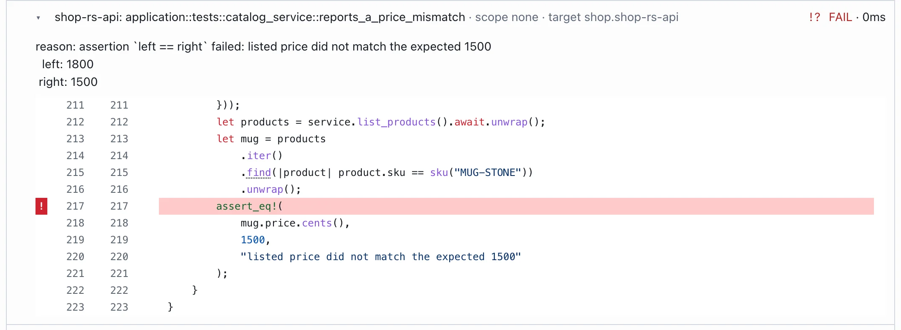
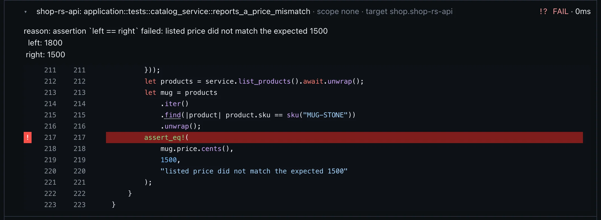
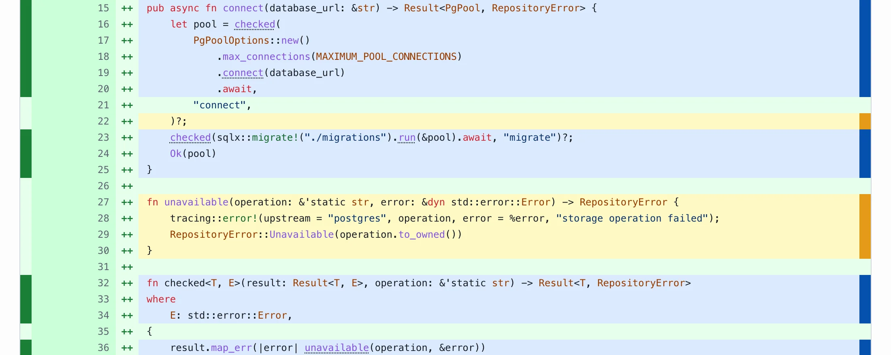
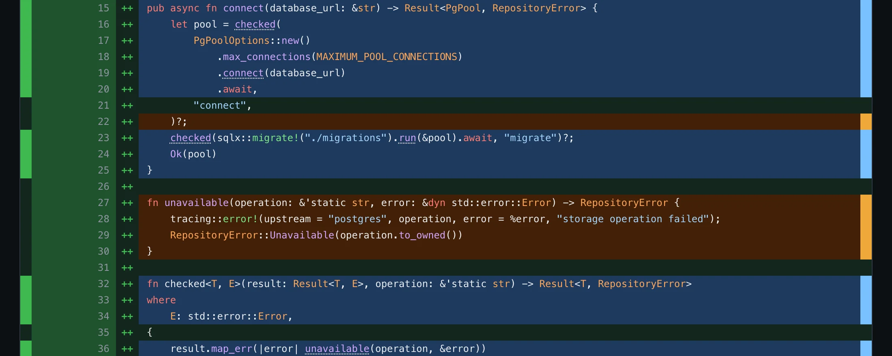
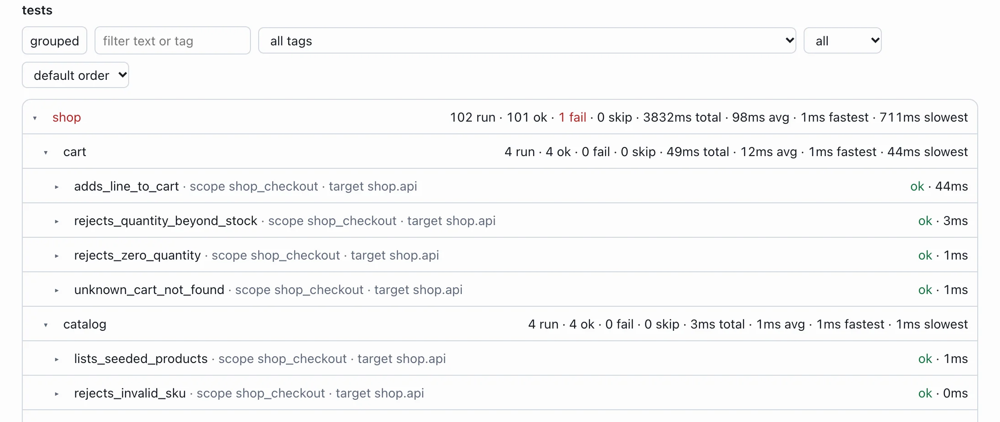
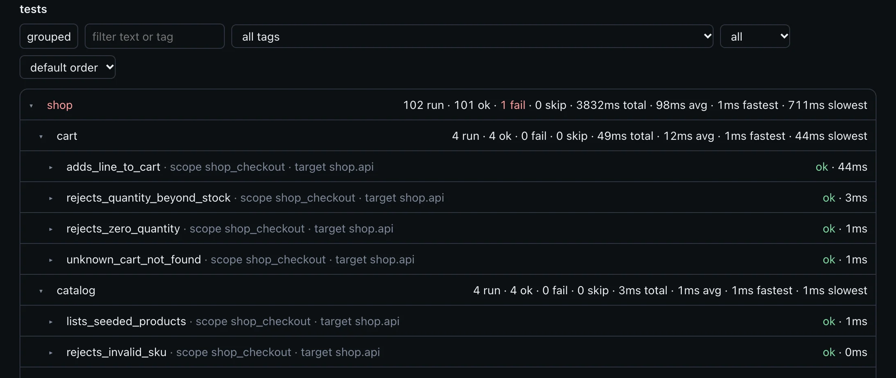

Mono multiple-repositories.Multiple mono-repositories.Single test workflow.
A single feature can touch your frontend, APIs and shared libraries across a monorepo, a multi-repository project or several monorepos. Each component has its own languages, test tools and services. You need to test them together.
Cherry Test coordinates the tests in your configured workspace and brings their results and coverage into a single report. Keep your existing test tools. Spend less time running commands and collecting results.
Generate a cherry-test.yaml file and review the packages it finds. Configure the test suites and services your workspace needs.
2
Run the tests together
Cherry Test runs your configured test tools and starts Docker Compose services for the integration tests that need them.
3
Open the report
See passed, failed and skipped tests alongside coverage. Start with the summary, then inspect the details.
See Shop run in 13 seconds
Shop is a single configuration root, app/shop, with a single cherry-test.yaml and a single report. That root holds multiple different technologies: shop-rs-api (Rust, Axum), shop-ts-lib-cart (TypeScript) and shop-ts-web-react (React). Postgres is the Compose database, and the shop_checkout scope starts that stack. Another repository is another --root and its own report.
cherry-test --root app/shop --verbose loads that file, runs Cargo, Vitest and Playwright where each package asks for them, and lists every suite and test at the end. This recording is about 13 seconds. The real run takes about two minutes, mostly while Docker builds the API. The sample report stays on its own button.
The recording could not be loaded. Open the sample report to see the results of this run.
Recorded run of cherry-test --root app/shop --verbose.Open sample report
Review a single change request
A change request is easier to review when the tests, the coverage, the complexity, and the CRAP scores sit next to the code it changes. Cherry Test runs the configured tests and places those results on the diff, including when the feature crosses components.
A frontend, an API, and a shared library can live in one monorepo or across several repositories. Each component can use its own language and test tool. One workspace run can include several projects, and each project is compared with its own base. A second repository is another --root and its own report.
The shop example keeps those components in a single configuration root, app/shop, and a single git repository. Branch discount adds a catalog discount across 19 files: the Rust API shop-rs-api (Cargo), the TypeScript cart shop-ts-lib-cart (Vitest), and the React shop shop-ts-web-react (Vitest and Playwright). A stone mug is seeded at 10 percent off. Two mugs list at 1800 cents and check out at 1620 cents each, 3240 cents together. Cherry Test compared that branch with main on lmrrcc/shop#1.
The run header is FAIL. application::tests::catalog_service::reports_a_price_mismatch still expects a listed price of 1500 cents, and that test’s source file is in this diff. The new mug checkout passed.
In Changes, a blue rail is a line a test reached and an amber rail is a line it missed. The same discount can be followed from the API into the other components. The rejection of a percent outside 0 through 100 is amber in DiscountPercent::parse and in discountedUnitCents. The TypeScript function discountedUnitCents has 71% coverage. The measured lines in the changed React files are fully covered.
The report keeps the full test list and the full CRAP list. Tests on this change lists the 13 recorded tests whose source file is in the diff: 12 passed and 1 failed. On this change scores the 24 functions whose lines overlap the added diff, across the API, the cart library, and the React shop. The workspace scores 167 functions. The worst score on the change is 14.7, below the threshold of 30, and none are at or above 30. The test failure is what fails the run. The article walks the diff row, the thirteen tests, and the twenty-four CRAP functions.
Read the diff row
++ is a line the branch added. The left rail is the test outcome. The right rail is coverage: blue when a test reached the line, amber when it did not. In DiscountPercent::parse, the arm that accepts a percent is blue. The arm that rejects anything outside 0 through 100 is amber.
Tests on this change
These are the recorded tests whose source file is in the diff, not every test that ran. Thirteen qualify. Twelve passed, including the new mug checkout at 1620 cents each. reports_a_price_mismatch failed: the listed price was 1800 cents and the test still expected 1500.
CRAP on the added lines
On this change scores functions whose lines overlap an added line. Twenty-four functions, across the API, the cart library, and the React shop. The worst score is 14.7. None are at or above the threshold of 30. The test failure is what fails the run.
See which tests failed and why. The failing assertion is shown with its code and the failing line marked. Captured requests, screenshots and browser traces are attached when the runner records them.


Check coverage on your changes
View code changes alongside coverage. Lines your tests reached are marked blue, lines they missed are marked amber, so untested changes stand out.


Review the results in a browser
Every suite and test on one page, with totals and timings. Filter by text, tag or status, and sort by duration. Open it locally or save it as a CI artifact for your team.


Spot risky code
The CRAP score combines each function’s complexity with how much of it your tests cover. The riskiest functions come first, coloured by severity, and each one opens to show exactly which lines no test reaches.
Cherry Test is in early development. If something doesn’t work for your project, tell us about it on GitHub.
1Generate cherry-test.yaml from the packages and services Cherry Test finds.
generate cherry-test.yaml
$ cherry-test --init-only
2Review the packages, test suites and services in cherry-test.yaml. When you’re ready, run:
run the tests
$ cherry-test
Docs
Documentation
Installation, configuration, integration tests, coverage, CI and the command reference. Each configuration root has its own run and report.
What Cherry Test supports
A change in one service can break another package. Cherry Test runs those parts in one configured flow: mixed languages, nested Git checkouts, Compose services, merged LCOV against a Git base, and a report a reviewer can open without an IDE.
What Cherry Test runs today
Area
Support today
Rust
Unit and integration tests through Cargo. Coverage through cargo-llvm-cov.
JavaScript and TypeScript
Vitest tests, JSON results, and LCOV coverage.
Java and Kotlin
Maven or Gradle, JUnit XML, and JaCoCo source coverage.
C and C++
CMake/CTest, Unity or GoogleTest, and LLVM source coverage.
React and Vue
Vitest unit tests, plus Playwright functional tests and screenshots.
Browser tests
Playwright results, screenshots, expected/actual/diff images, and trace attachments.
Other commands
A functional runner launches an external command and reads its exit status.
Test containers
Docker Compose starts the stacks named by a scope.
Mocks
Use the test framework's mocks, or run a mock server as a Compose service.
Reports
Terminal summary, HTML report, LCOV files, and recorded integration requests.
Mutation testing
Run an external tool beside Cherry Test. The HTML report has no mutant results.
CRAP scoring
Calculated on a normal run from cyclomatic complexity and line coverage. --no-crap skips it.
Adapters run local tools or container toolchains. An external executable adapter can add a language without rebuilding Cherry Test. See the adapter guide and the six-backend price sample.
Install
A binary, or Cargo from this repository
Release 0.3.16 ships prebuilt cherry-test and cargo-cherry-test for macOS on Apple Silicon. Other platforms build from source. Cargo's binary directory, usually ~/.cargo/bin, needs to be on PATH when you install with Cargo.
Inside this checkout, cargo cherry-test runs from source without a separate install. A hosted script is also published at https://lmrr-cc.pages.dev/install/cherry-test.sh.
Tools you need
The binary runs without Rust. Coverage, Node packages, and containers need the tools for the packages you actually select.
Tool
When you need it
Rust and Cargo
To build Cherry Test from source and to run Rust packages.
Git
To discover changed files and compare a branch.
Node.js and a package manager
To install and run Vitest or Playwright packages.
cargo-llvm-cov and LLVM tools
To collect Rust coverage.
A Vitest coverage provider
To collect Node coverage. Match its version to Vitest.
Docker with Compose
To start the configured service stacks.
A web browser
To open the HTML report. CI can skip the automatic open.
Install Node dependencies before the run, for example pnpm install in a pnpm workspace. Browser tests also need the browsers named by the Playwright config.
Update
The updater and install.sh default to lmrrcc/cherry-test. --repo or CHERRY_TEST_REPO selects another checkout.
update
$ cherry-test update --repo https://github.com/lmrrcc/cherry-test --branch main
Quick start
--init-only writes cherry-test.yaml from discovered packages and services. Review paths, kinds, and scopes before the first full run. Running with no configuration file creates one and starts the tests in the same invocation.
Coverage and the browser report are on by default. --no-open leaves the report on disk. With the default paths, open target/cherry-test/latest/reports/index.html. The terminal prints the same path.
Released binaries
Prebuilt binaries attached to tagged releases. Generated 2026-10-08 from the repository.
Architecture
Shop is one root. Each other repository is another run.
A multi-repository workspace is several checkouts side by side. Cherry Test reads one cherry-test.yaml per run and writes one report for that root. Shop is the separate lmrrcc/shop repository, checked out at app/shop. That root holds a Rust API, a TypeScript cart library, a React storefront, and Postgres.
shop-rs-apiRust workspace member. Axum. Unit and integration.domain → application → infrastructure (postgres, web)
shop-dbpostgres:16-alpine. Compose service shop-db.Health check: pg_isready. API waits until it is healthy.
scope shop_checkout starts the stack, then tests call service "api" on port 3000
shop-ts-lib-cartTypeScript library. Vitest unit and integration tests. The storefront prices lines through this package.
shop-ts-web-reactReact 18 storefront on Vite 6. Vitest unit tests, Playwright functional tests, and Playwright visual snapshots.
another checkout
Its own cherry-test.yaml
A payments service, or any other Git checkout with its own Cargo workspace, stays outside shop. Run cherry-test--root there. That run writes its own report. Cherry Test does not clone repositories or merge those reports into shop.
Shop is its own Git repository, with one Cargo workspace and one pnpm workspace. It is the shape of a configuration root you keep next to other repositories.
Rust packages in one run have to be reachable from that root's Cargo workspace. Setting manifest helps discovery. It does not point the Rust runner at a different workspace. Give each independent Rust workspace its own cherry-test.yaml and invoke it with --root.
Put cherry-test.yaml beside the workspace it describes. manifest, compose, and runner cwd paths are relative to that file. Package names match the Cargo or npm manifest. Compose service names match docker-compose.test.yml.
Open the report after a local run. Default true. Shop omits it and keeps the default.
defaults.runs_base
Run directory. Default target/cherry-test/runs.
defaults.diff_base
Git ref to compare. Default main. A project can override it, including inside a nested repository.
defaults.scope
global, none, a project id, or a named scope.
defaults.coverage_ignore
Exclusion file. Default .coverageignore.
packages.<name>.kinds
unit, integration, functional, visual, ui, or mutation. mutation runs only when --kinds names it. CRAP is calculated on a normal run. --no-crap skips it.
scopes.<name>.projects
Projects whose Compose stacks that scope starts.
cherry-test.yml and cherry-test.toml are accepted. --init-only scans six directory levels for Cargo, Vitest, Maven, Gradle, and CMake packages, common Compose filenames, and #[cherry_test] scopes. It skips .git, target, and node_modules. --force-init rewrites cherry-test.yaml; review that diff. For an unusual layout, edit the file and pass --root.
A functional or ui block uses command, args, and cwd, and the kind has to appear in kinds. Set adapter: playwright on a browser phase to import results and screenshots. Strict runs require individual test results. The command adapter's exit-status check is for non-strict runs.
Vitest output
Cherry Test passes VITEST_JSON_REPORT and, when coverage is on, VITEST_COVERAGE_DIR. The cart library and the React storefront write both into the current run. The Node runner uses the Vitest installed in cwd. Functional and visual phases run Playwright through the shop adapter. Browser coverage from those phases is merged with the storefront unit LCOV, and with the cart library the page imports.
Scoped integration tests start Compose with up -d --build --wait. Cherry Test reads the mapped ports and tears the stacks and their volumes down afterwards. Shop publishes container ports without a fixed host port. The API image waits for shop-db, then wget checks /health. Database credentials come from SHOP_DB_* in .env.
When Docker is unavailable, scoped integration tests are recorded as skipped. A non-strict run can still succeed. --strict fails the run when a required test is skipped. Check Docker before CI starts.
Add TestEnv with these dev-dependencies. The macro uses tokio and anyhow in the package under test. In this checkout, shop-rs-api points cherry-test-core at test/cherry-test-core instead of the git source. Commit the lockfile.
Cargo.toml · dev-dependencies
[dev-dependencies]
anyhow = "1"cherry-test-core = { git = "https://github.com/lmrrcc/cherry-test", branch = "main" }
tokio = { version = "1", features = ["macros", "rt-multi-thread"] }
The checkout test opens a cart, adds three units of NB-DOT-A5, posts checkout, and checks the order total and the stock decrease. Names follow {project}_project_{suite}_suite_{test}_test. The macro requires an async function, one env: TestEnv argument, and no declared return type. ? is allowed in the body. Ordinary cargo test sees these tests as ignored. Cherry Test selects them in the integration phase. The React storefront covers the same API again with functional tests and visual snapshots: the catalog, cart lines, checkout, and the rejection cases.
shop-rs-api/tests/integration.rs
use cherry_test_core::prelude::*;
#[cherry_test(scope = "shop_checkout")]async fnshop_project_checkout_suite_places_order_and_decrements_stock_test(env: TestEnv) {
let stock_before = stock_of(&env, "NB-DOT-A5").await?;
let cart_id = open_cart(&env).await?;
add_item(&env, &cart_id, "NB-DOT-A5", 3).await?.assert_status(200);
let response = env
.project("shop")
.service("api")?
.post(&format!("/v1/carts/{cart_id}/checkout"))
.send()
.await;
response.assert_status(201);
let order = response.response_body_json()?;
assert_eq!(order["total_cents"], 4200);
assert_eq!(stock_of(&env, "NB-DOT-A5").await?, stock_before - 3);
}
Use framework mocks for a timeout or an unavailable third-party API, or add the mock server to Compose. Cherry Test runs the tests and services you configure. For a full path, run the real API and database, and add browser tests when the UI is part of the flow. A mocked dependency checks the behavior that mock represents.
Coverage and the browser report
Rust coverage comes from cargo-llvm-cov, Node from Vitest, JVM from JaCoCo, and C/C++ from LLVM. Cherry Test converts those into LCOV and summarizes by package, project, and phase. The HTML file carries its own styles, so reading it needs no IDE and no report server.
Report area
What you can inspect
Run summary
Package status, test counts, coverage, and the run id.
Projects
Package results, with unit, integration, and combined coverage.
Tests
Pass, fail, and skip, plus timing, filters, and failure reasons.
Test details
HTTP records and source snippets when the runner captured them.
Changes
Project and file diffs, line numbers, and coverage markers.
On this change
Recorded tests whose source file is in the diff, and CRAP for functions whose lines overlap the added diff. The full lists stay in the report.
Markers distinguish covered lines, uncovered lines, and lines with no coverage data. A covered line still needs an assertion that checks the behavior. Set diff_base to the branch or commit under review, and fetch it first. empty, empty-tree, and root compare the tracked tree with an empty Git tree. Discovery includes commits since the base, staged changes, unstaged changes, and untracked files.
The Shop discount change request places tests, coverage, and CRAP next to one branch that touches the cart library, the API, and the React shop. This example is one repository. A second repository is another --root and its own report. Open the change report.
diff base and coverage ignore
defaults:
diff_base: origin/development# .coverageignore at the configuration root
**/generated/**
Keep ignore rules narrow. An exclusion changes what the coverage percentage means, so review edits to that file with the tests.
Review the change in CI
Use the report as evidence before a merge, whether a person or an agent wrote the change. A green exit code covers the packages and phases you selected.
Check out the change, submodules, and the target branch history.
Install project dependencies and coverage tools.
Start Docker when integration tests need containers.
From the configuration root, run cherry-test--strict --no-open.
Save reports/ and coverage/ from the run directory, including when the step fails. latest is a Unix symlink.
Review failures, skips, uncovered edits, and the assertions on the changed behavior.
Require the CI checks and the code review before the merge.
shop root
$ set -euo pipefail
$ export CI=true
$ cargo llvm-cov --version
$ docker info >/dev/null
$ docker compose version
$ cherry-test --root app/shop --strict --no-open
$ test -s app/shop/target/cherry-test/latest/reports/index.html
$ test -s app/shop/target/cherry-test/latest/coverage/merged.lcov
Run that in a fresh checkout with coverage: true and html_report: true. Upload the run's reports/ and coverage/ under target/cherry-test/runs/. From inside app/shop the same files are target/cherry-test/latest/.... --strict rejects failed or skipped tests, empty required phases, missing requested coverage, and invalid adapter results. A normal run reports CRAP. A high score does not fail the run. Minimum coverage and mutation score stay separate required checks. Review edits to tests, ignore files, and package selection along with the product code.
Mutation testing
Line coverage can stay high while assertions stay weak. Mutation testing is a separate check. Cherry Test does not create mutants or score them.
A tool changes a comparison, a return value, or an operation, then reruns the tests. A change the tests catch is a killed mutant. A change that leaves the tests passing is a surviving mutant. Some survivors are missing tests. Some do not change observable behavior. Cherry Test starts that tool only when you pass --kinds mutation. Rust uses cargo mutants. C and C++ use Mull. Java and Kotlin use PIT. Node, React, and Vue use StrykerJS with Vitest. Keep that report next to the Cherry Test report and let the mutation tool fail the job.
CRAP (Change Risk Anti-Patterns) combines cyclomatic complexity with coverage. A function with many paths and little coverage scores higher. Coverage in the formula is a fraction from 0 to 1. The original metric uses basis-path coverage, so compare tools only after checking their definition. The aggregate LCOV percentage in the Cherry Test report is not a CRAP score.
CRAP
CRAP = complexity^2 * (1 - coverage)^3 + complexity
# complexity 10 → 110 at no coverage,# 22.5 at half coverage, 10 at full coverage
A normal run calculates cyclomatic complexity for each function in measured source and reports CRAP in the terminal and the HTML report. Pass --no-crap to skip that calculation. Complexity starts at 1 and adds one for each if, loop, catch, switch case, match arm, &&, ||, and ternary. Coverage is the fraction of measured lines inside the function, not basis-path coverage. Rust, C, C++, Java, Kotlin, JavaScript, TypeScript, and Vue script blocks are scored. Crap load is 0 when the score is under 30, and complexity * (1 - coverage) + complexity / 30 when the score is at or above 30. A score of exactly 30 counts. The HTML report shows each function's complexity, measured-line coverage, CRAP, and crap load, then the workspace totals: function count, total complexity, total CRAP, mean, median, worst score, the count and percent at or above 30, and total crap load. Those totals are repeated per project when each scored file falls under one configured project path. The terminal prints the workspace totals and at most four of the worst functions, each with one source line, and then the suite summary. Files outside every project are labeled outside projects. A high score does not by itself fail the run.
Select a project id or a package name. shop and shop-rs-api are filters once that root is loaded.
--root <path>
Select a configuration root. Shop in this repo is app/shop.
--init-only
Load or create the configuration, then exit.
--force-init
Regenerate cherry-test.yaml from discovery.
--no-coverage
Run without collecting coverage.
--no-crap
Skip cyclomatic complexity and the CRAP report.
--kinds <list>
Run only these phases. mutation runs only when it is named.
--no-html
Skip HTML generation.
--no-open
Write the report and leave the browser closed.
--no-banner
Skip the startup banner.
-q, --quiet
Reduce terminal output.
-- <args>
Forward arguments to Rust's test harness.
--help
Show the full CLI help.
Run files and environment
Each run has its own directory. Build output can reach several gigabytes, so delete runs you no longer need. When you copy a report, keep adapter results and attachments. Leave rebuildable target/ and build/ trees behind. Keep generated files out of Git. On systems without the latest symlink, use the path printed in the terminal.
Files appear for the runners that ran. env.json records the service endpoints the runtime discovered. The runner loads .env.test from the configuration root when that file exists, or from the project-id directory. CI suppresses the automatic browser open.
Variable
Purpose
CHERRY_TEST_WORKSPACE_ROOT
Override the configuration root.
CHERRY_TEST_SKIP_COVERAGE=1
Disable coverage collection.
CHERRY_TEST_NO_OPEN=1
Disable the automatic browser open.
CHERRY_TEST_SKIP_DOCKER=1
Skip container startup and use supplied endpoints. Scoped test selection still depends on Docker preflight.
CHERRY_TEST_{PROJECT}_{SERVICE}_HOST
Service host exported after startup.
CHERRY_TEST_{PROJECT}_{SERVICE}_PORT
Mapped service port exported after startup.
CHERRY_TEST_{PROJECT}_{SERVICE}_URL
HTTP service URL exported after startup.
CHERRY_TEST_RUN_DIR
Current run directory, set by Cherry Test.
CHERRY_TEST_REPORT_DIR
Current report directory, set by Cherry Test.
VITEST_JSON_REPORT
JSON output path passed to Vitest.
VITEST_COVERAGE_DIR
Coverage directory passed to Vitest.
RUST_LOG
Tracing filter, such as cherry_test=info.
NO_COLOR
Disable terminal colors.
Current limits
Limit
What to do
Docker skips
Unavailable Docker skips scoped integration tests. Confirm those tests ran in CI.
Rust coverage
Missing cargo-llvm-cov fails a strict coverage run. A non-strict local run can continue with a warning.
Rust test selection
Unit runs use cargo test --lib. Integration runs use ignored integration targets. Doctests and other Cargo targets stay out of that selection.
Container coverage
The service image needs instrumentation and collection. Starting a container does not measure coverage by itself. The price sample collects service coverage for integration, functional, and visual phases.
Independent Cargo workspaces
Rust execution uses the configuration root's workspace. Separate roots mean separate runs and reports.
External results
A custom tool follows the adapter protocol to import tests, coverage, and artifacts.
--keep-going
It is checked between configuration roots. Inside a root, package processing already continues after a package failure. It is not a general recovery policy.
Concurrent container runs
Each CLI run uses its own Compose project name. Compose files also need to avoid fixed host ports and fixed container names.
Quality gates
CRAP is reported on a normal run and does not by itself fail the job. Mutation score and a minimum coverage threshold stay external tools or extra CI checks.
Development
Four crates implement the runner. app/mini is a second sample, in its own Git submodule and Cargo workspace. Read AGENTS.md before changing the code. A wrong success or a missing coverage file can hide defects in every project that uses the runner.